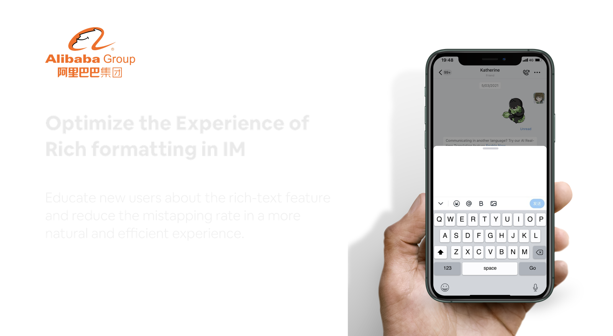
DingTalk - A professional office tool used by over 10 million enterprises and organizations
Since July 2020, I've been working on the DingTalk, an enterprise application of Alibaba Group, which integrates enterprise Products like Chat, Online meeting, Calendar, Drive and Docs into a one-stop-shop to help professionals get things done seamlessly and efficiently. I was mainly responsible for IM and efficiency tools in DingTalk, shipping efficiency suite, solving problems in multiple messaging scenarios, and delivering professional settings in chat for admins.
Context
Accidental taps happen while editing the content of the message in IM can be extremely frustrating
The whole project started with some customer complaints about mistapping the 'rich-text icon while inserting emojis in IM. This is a common problem when icon buttons are aligned in a row. Users can easily hit adjacent buttons, which slow down their task performance.
I discovered this problem from a voice-from-users internal website and then initiated this design improvement.
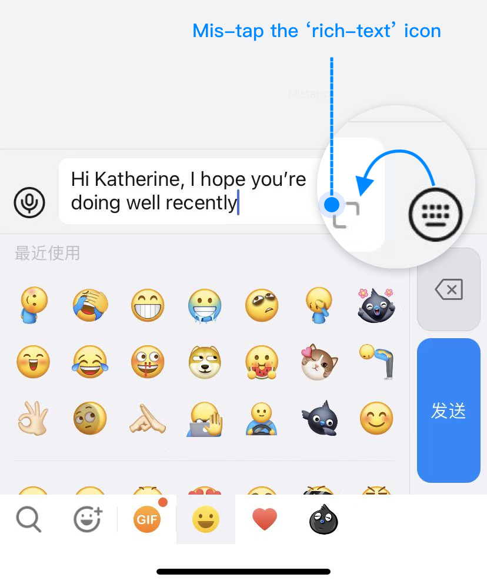
Problem Analysis
Is this a padding issue?
I thought it was an easy-to-solve problem after analyzing the whole scenario. After checking the hot zone with engineers and analyzing finger-friendly padding, I defined that the problem was caused by hot zone and positions.
Problem 1
Icons are placed too close
Problem 2
Inappropriate hot zone
A thinking trap by a single perspective
However, I was surprised to find this problem had undergone several iterations in the past 2 years. Aware of falling into a thinking trap, not considering the whole view of the problem, I got out of myself as a designer and think like a customer. I noted down questions I have after walking through the assumed customer process.
Enterprise users
Jump out of trap
Consumer product users are individuals.
Unlike consumer products, enterprise products would categorize users based on their professional roles.
Consumers look for simple, smooth UX, and fancy UI.
Enterprise users take efficiency above everything.
Consumers use a product to finish a task.
Enterprise uses the product to get their job done.
As a designer, I'm nowhere close to a user. My assumptions might not even be relevant. Confronted with limited time, I chose to conduct guerrilla testing with 5 Alibaba employees in different positions to understand how customers use rich text features, what their workflow is, and what causes dissatisfaction.
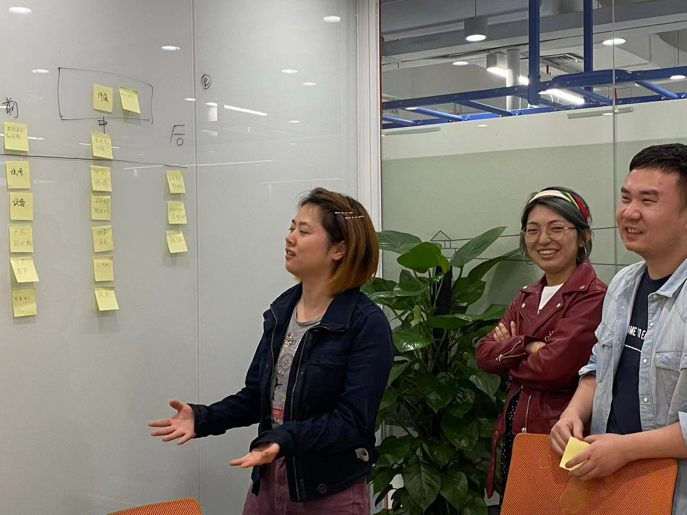
Guerrilla testing
Customer Insights
#1 Many customers do not know rich-text feature at all
From my observation, I noticed some participants sent messages and words separately. An image is usually followed by some descriptive words. Some participants even googled how to send rich messages on DingTalk. So I hypothesized people might not know much about this feature.
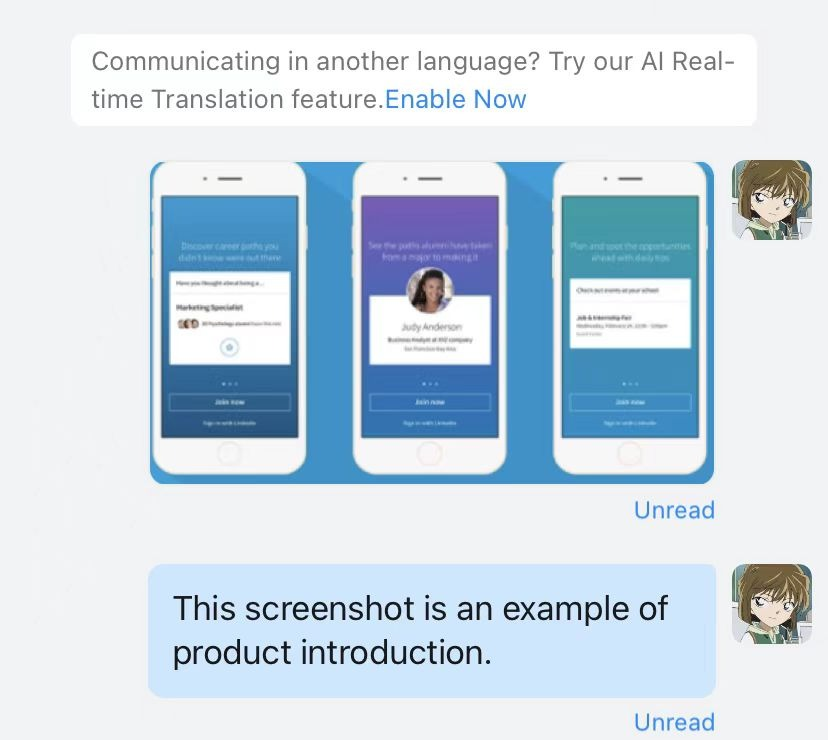
Sent messages and words separately
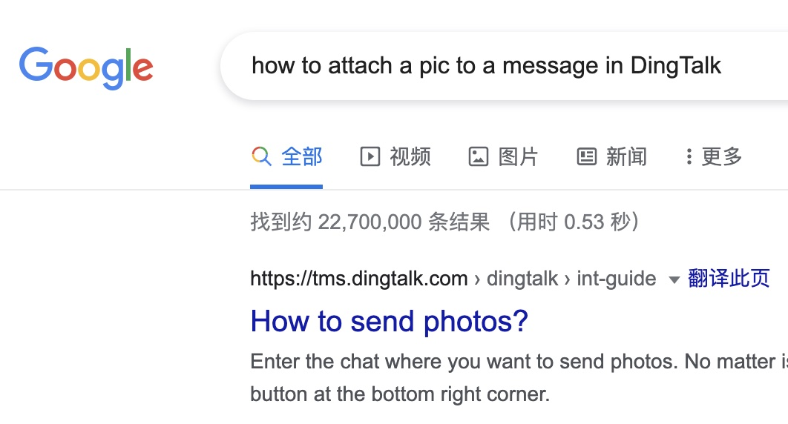
Even searched how to send rich messages
#2 It's easy to mistap when switching features and editing words.
I discovered 3 scenarios when mistapping happens
- Mistapping while editing the content (the last word)
- Mistapping while switching between emoji and keyboard
- Tap while unstable situation
#3 A new loading page makes people confused after mistapping
Another key observation is that users drop off after mistapping rather than continuing editing in the rich text editor. The long loading time in the rich-text editor makes people confused and causes a high drop-off rate after mistapping.
Mistapping & After mistapping
Quantitative Insights
I researched the current usage of three co-related features to find clues about my hypothesis. The magnitude gap is large between rich text and other forms of messages. So I assumed most users might not know about this feature. I considered two metrics to verify my assumptions, such as unique views of the rich text editor and the number of rich text messages sent.
[1] UV indicates Unique view: If a user views the same page more than once in a session, this will only count as a single unique page view.
Project Reframe
From a holistic perspective, the customer's lack of understanding of rich text is a more serious problem. I discussed research insights with my PM and suggested viewing it as an opportunity to improve the overall rich text experience. We agreed that educating users about rich text feature is our top priority.
Considering how customers are before, during, and after using the rich text feature, I've summarized the top priorities. Most users do not know about the rich text feature. Some users mistakenly tap the rich text button when editing. Users have no idea where they are after mistapping, so they drop off.
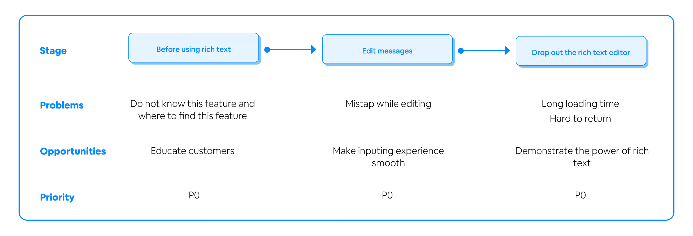
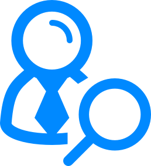
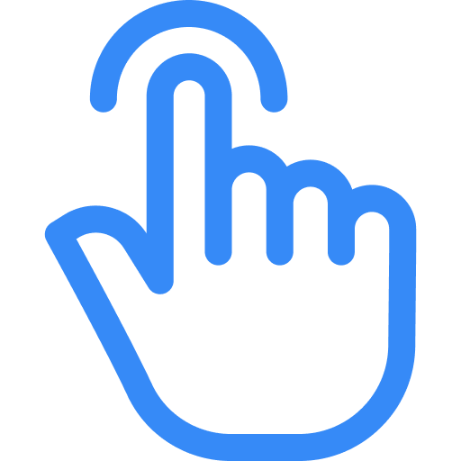
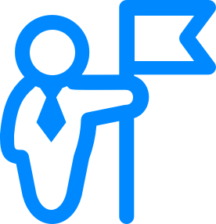
Design
01
Design Challenge
How might we educate users know and use rich-text feature?
Recap
Pain points
- Firstly do not know this feature
- Seeing rich text messages sent from others, he was confused about how to send one by himself
Corresponding considerations
- Educate new users
- Increase the discovery of the rich-text entrance
The first challenge is to help users discover rich text feature. So, in my design considerations, educating new users is the top priority. Increasing the discovery of the entrance is also needed since rich-text button is covered in online version.
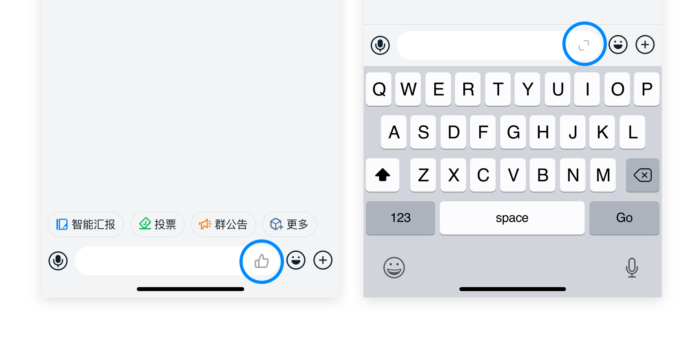
Rich text button is hard to find
Design Strategy 01
Educate new users with users
It's my strategy to have frequent users educate new ones. I attached a button below a rich text message sent by others so that new users can also send rich text messages when seeing them. An "Expand" icon is used in the button to strengthen memory so that users could recognize the rich text icon next time.
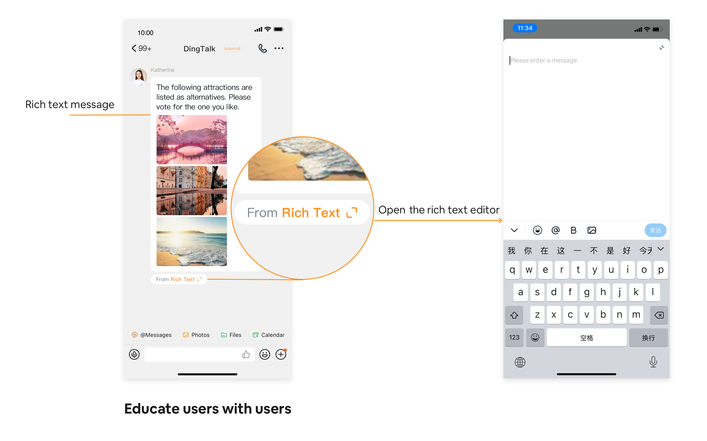
Design Strategy 02
Micro animation to draw attention
In order to deal with the covered rich text entrance, I brought up two solutions. New user guidance is everywhere in many apps, including DingTalk. However, an unexpected guidance might cause interruption for users. So I adopted a more lightweight, natural way, a micro animation, to draw attention. The motion can focus a user's attention on a specific area we want them to see.
Please pay attention to the expand icon. As you can see, the expand icon shows up spinning as the keyboard rises up.
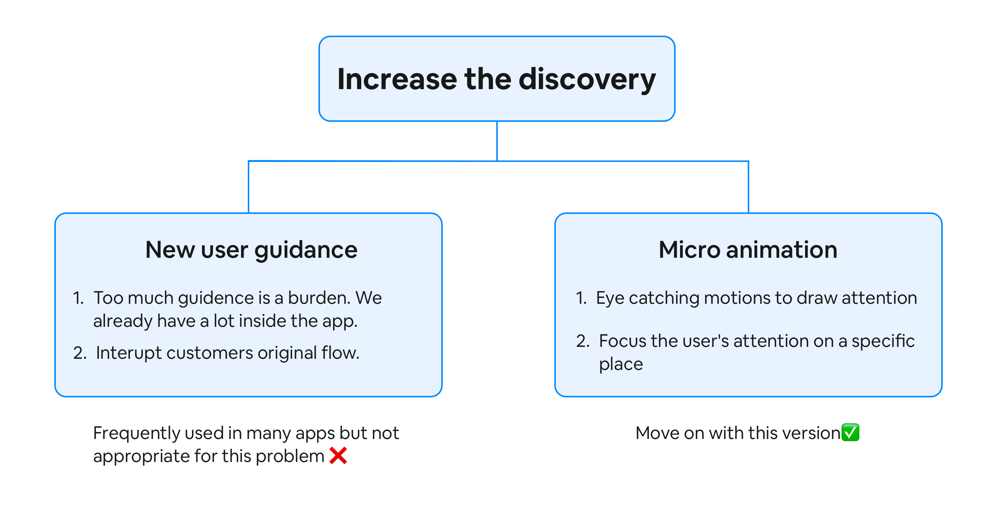
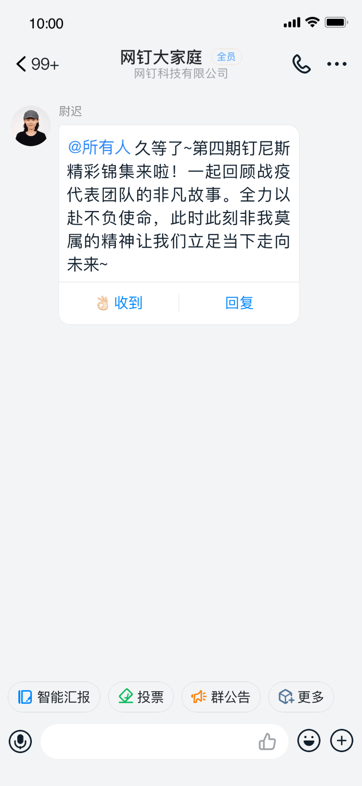
The rich text icon rotates as the keyboard rises to increase its discovery
02
Design Challenge
How might we reduce interruptions?
Recap
Pain points
- Annoyed by the interruption caused by mistapping
- She collapsed the rich text editor and drops off after mistapping
Corresponding considerations
- Adjust the hot zone and position
- Reduce the cost to retract after mis-tapping
Sara is annoyed with interruptions caused by mistapping. So I considered solving the problem by adjusting the hot zone and position of the rich-text button. I also thought about reducing the annoyance of interruptions by helping users recover from errors more easily.
Design Strategy 01
Adjust the hot zone and position
I expanded the "breathing room" between the input box and the rich text icon. Likewise, the safe spacing between the emoji button and the rich text button has been expanded. Proper hot zones eliminate error-prone conditions.
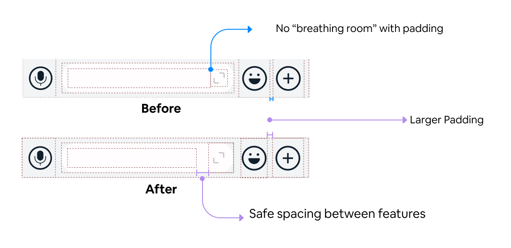
I also thought about moving the rich text button above. Nevertheless, I am also aware that any important change may have a ripple effect. 1. Users habits have been developed over years. Even a small difference might make millions of users uncomfortable. 2. The entire panel needs to be changed accordingly, so it takes a huge effort. So I did not adopt it even though it could solve the mistapping problem seamlessly.
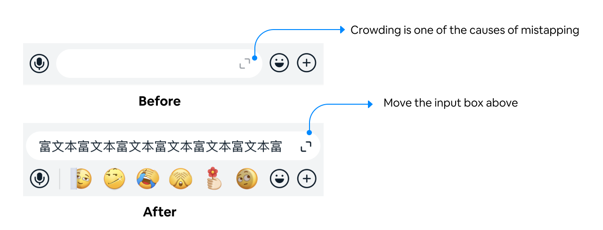
* Not adopted this time
03
Design Challenge
How might we help users discover the value of rich-text?
Before talking about how to make rich formatting self-evident, we need to come back to the reason why users drop off in this step.
Why people drop off once mistapping?
People didn't view our rich text editor as a messaging tool.
People think that the new page looks like a bug because of the long loading time and the slow pop-up box.
Opportunities
Help users discern the power of rich text editor
Streamline the rich text sending flow
Design Strategy 01
Smooth the rich text editor unfolding
Loading is caused by waiting for the API to return the typed characters. In order to make the functionality of the rich text editor self-evident, I worked with engineers to smooth the unfolding of the rich text editor. I also removed the pop-up to speed up the loading time.
Before
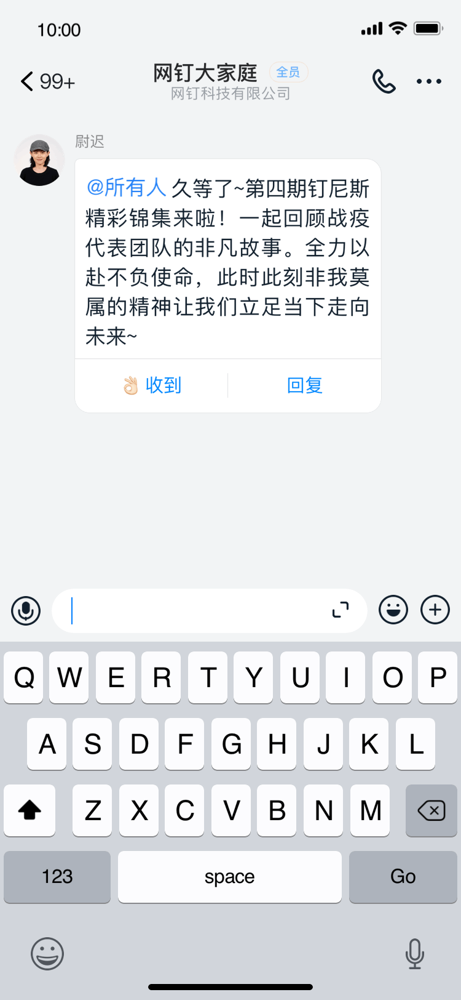
After
Design Strategy 02
Optimize the flow
Deleting the feature is always not an easy task, nor is removing pop-ups. I analyzed the original flow and its purpose on each step. My research shows that asking if to keep the typed words is not what the user expects. Even though enquiring customers respects their choice, it leads to longer loading and impacts rich text experience. Its weaknesses outweigh its strengths. So I came up with an optimized flow to match the habits of our customers.
Original Flow
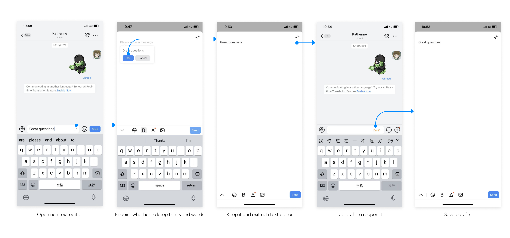
Modified Flow
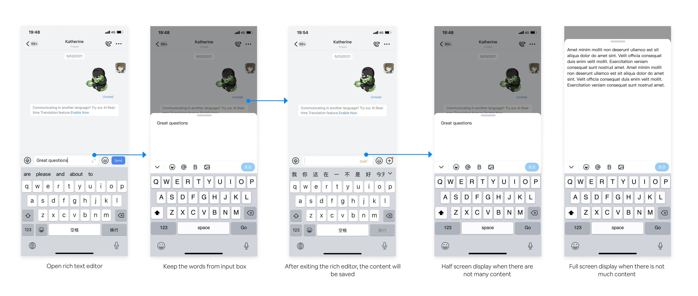
Results
I'm excited to see a significant increase in the number of people using efficient rich text features in their daily work.
Quantitative
+84%
UV of rich text editor
30-day window post-launch vs. prior 30 days
Quantitative
+126%
Number of rich-text messages sent
Measured across 100M+ enterprise DAU
Qualitative Feedback
Mistapping is no longer frustrating.
— DingTalk user
I knew how to send rich text messages right now.
— DingTalk user
- ✓ 15/15 people passed the test without mistapping
- ✓ Users can understand the value of rich text feature in a natural way
Envisions and Reflections
At the current stage of the product, we don't support forwarding, copying, and pasting rich text. So we still have a long way to go. In the near future, I hope to be able to anticipate user behavior and naturally leverage guidance on their critical path.
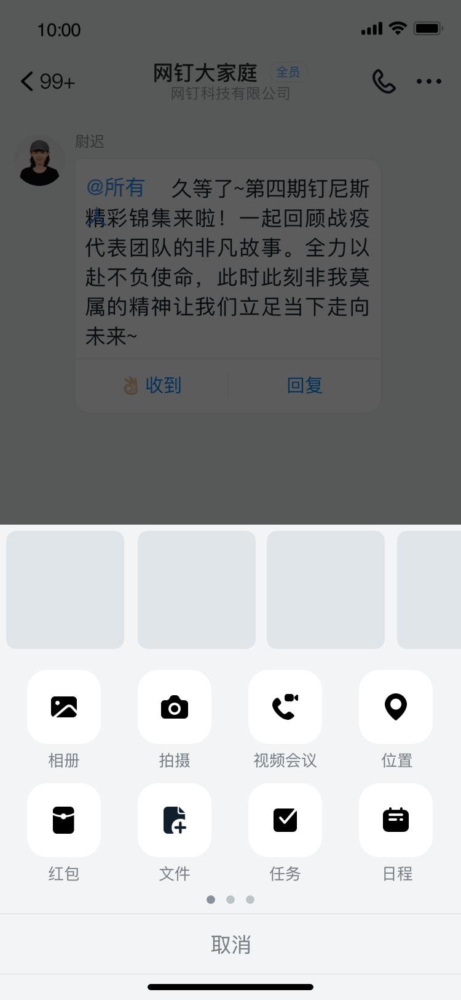
Scenario1
People usually have potential needs of adding description when sending images. So I choose to proactively adapt to users' behavior.
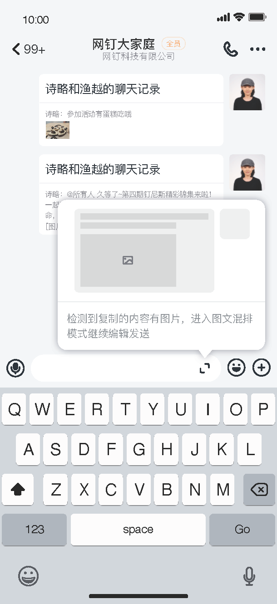
Scenario2
When DingTalk does not support copy-pasting rich text messages, it is better to guide on sending rich text messages than to notify people with an error toast.
Reflecting on the entire design journey, I experienced confusion about the mystery of the problem, doubts about project scope, pressure to lead the design direction and joy of receiving great feedback.
01
Good products are a whole-organization effort
Initiating a project is never easy. As I learned more about my customers, the scope of the project changed. Therefore, I suggested my PM partner to expand the scope as a more serious problem presented to us. However, we are faced with technical constraints. Aligning with all the partners and discussing about technical effort on each option, we successfully ship the entire project with lightweight design and minimal effort.
02
Communicate more = understand more
Resources are never enough. But research is always necessary, even informal interviews are insightful. Communicating about my projects and getting feedback from other people also help me understand the historical reasons and avoid unnecessary effort.
03
Designer's imperative
Designers generally don't make decisions based on opinion or what someone 'likes'. The true magic of today's designer is in how they can interpret implicit and explicit data, and thoughtfully transform that information into design solutions.
04
Designer's impact
In order to deliver exceptional experiences, designers will need to help our organizations transform themselves into being empathy driven and customer focused in all they do. I will continue communicate the benefits of empathy-inspired design to executives and decision makers, immersing them in the process.
Design is a step-by-step process of approaching the truth. Designers need to get in and out from problems throughout defining journey, so don't take anything for granted.